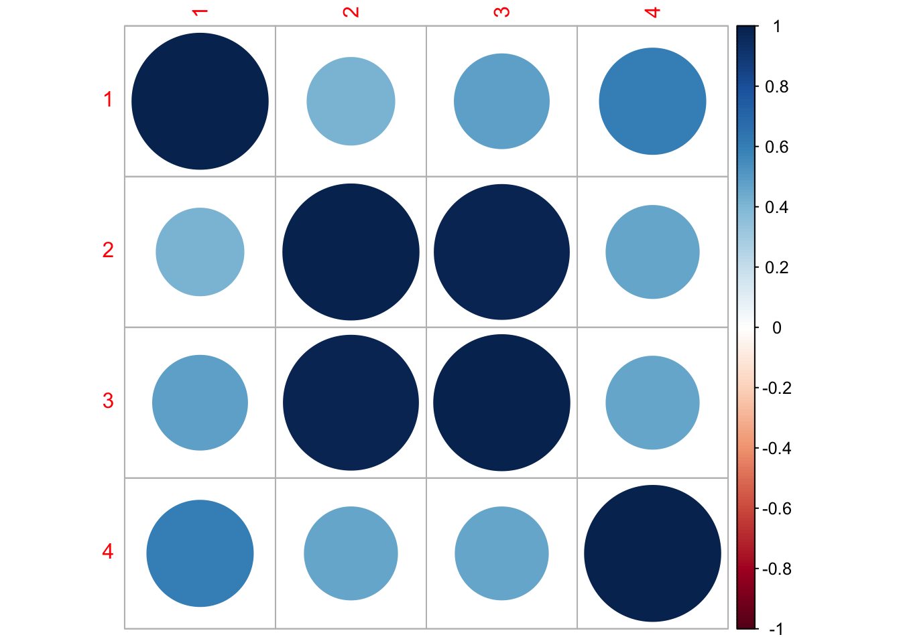

[1] "Steelhead (Middle Columbia River DPS)"
[2] "Steelhead (Upper Columbia River DPS)"
[3] "Steelhead (Lower Columbia River DPS)"
[4] "Salmon, coho (Lower Columbia River ESU)"
[5] "Salmon, Chinook (Lower Columbia River ESU)"7 Lab Intro
Lab 2 Analyzing multivariate salmon data
For this lab you will use multivariate auto-regressive state-space (MARSS) to analyze multivariate salmon data from the Columbia River. These data are noisy and gappy. They are estimates of total spawner abundance and might include hatchery spawners.
7.1 Teams
- Lower Columbia River Chinook: Zoe Rand (QERM), Emma Timmins-Schiffman (Genome Sci), Maria Kuruvilla (QERM)
- Lower Columbia River Steelhead: Eric French (Civil), Liz Elmstrom (SAFS), Terrance Wang (SAFS)
- Lower Columbia River Coho: Nick Chambers (SAFS), Karl Veggerby (SAFS), Miranda Mudge (Molecular & Cellular)
- Middle Columbia River Steelhead: Madison Shipley (SAFS), Dylan Hubl (Env & Forest Sci)
7.2 Lower Columbia River salmon spawner data
These data are from the Coordinated Assessments Partnership (CAP) and downloaded using the rCAX R client for the CAX (the CAP database) API. The data are saved in Lab-2/Data_Images/columbia-river.rda.
The data set has data for fi endangered and threatened ESU (Evolutionary Significant Units) in the Lower Columbia River.

7.2.1 Data structure
The dataset has the following columns
[1] "species" "esu_dps" "majorpopgroup" "esapopname"
[5] "commonpopname" "run" "spawningyear" "value"
[9] "value_type" - species: Chinook, Coho, Steelhead
- esu_dps: name of the ESU
- majorpopgroup: biological major group
- commonpopname: common population name, generally a stream or river
- run: run-timing
- spawningyear: the year that the spawners were counted on the spawning grounds
- value: total (natural-born and hatchery-born) spawners on the spawning ground. Generally some type of redd-count expansion or some other stream count of spawners. Redd = a gravel nest.
7.2.2 Data plots
Let’s load one ESU and make a plot. Create a function.

7.3 Tasks for each group
Create estimates of spawner abundance for all missing years and provide estimates of the decline from the historical abundance.
Evaluate support for the major population groups. Are the populations in the groups more correlated than outside the groups?
Evaluate the evidence of cycling in the data. We will talk about how to do this on the Tuesday after lab.
7.3.1 Tips
Simplify
If your ESU has many populations, start with a smaller set of 4-7 populations.
Assumptions
You can assume that R="diagonal and equal" and A="scaling". Assume that “historical” means the earliest years available for your group.
States
Your abundance estimate is the “x” or “state” estimates. You can get this from
fit$statesor
tsSmooth(fit)where fit is from fit <- MARSS()
plotting
Estimate of the mean of the spawner counts based on your x model.
autoplot(fit, plot.type="fitted.ytT")diagnostics
autoplot(fit, plot.type="residuals")7.3.2 Address the following in your methods
Describe your assumptions about the x and how the data time series are related to x.
- How are the x and y (data) related? 1 x for 1 y or will you assume 1 x for all y or 1 x for each major population group? How will you choose?
- What will you assume about the U for the x’s?
- What will you assume about the Q matrix?
Write out your assumptions as different models in matrix form, fit each and then compare these with AIC or AICc.
Do your estimates differ depending on the assumptions you make about the structure of the data, i.e. you assumptions about the x’s, Q, and U.
7.4 Sample code
Here I show how I might analyze the Upper Columbia Steelhead data.

Set up the data. We need the time series in a matrix with time across the columns.
Load the data.
Wrangle the data.
Clean up the row names
Specify a model
Fit the model. In this case, a BFGS algorithm is faster.
Success! Converged in 235 iterations.
Function MARSSkfas used for likelihood calculation.
MARSS fit is
Estimation method: BFGS
Estimation converged in 235 iterations.
Log-likelihood: -109.4078
AIC: 256.8155 AICc: 262.1676
Estimate
R.diag 0.00997
U.X.Entiat 0.02182
U.X.Methow 0.01852
U.X.Okanogan 0.00140
U.X.Wenatchee -0.02222
Q.(1,1) 0.28016
Q.(2,1) 0.12303
Q.(3,1) 0.14275
Q.(4,1) 0.23415
Q.(2,2) 0.31642
Q.(3,2) 0.30806
Q.(4,2) 0.19061
Q.(3,3) 0.31031
Q.(4,3) 0.18852
Q.(4,4) 0.52813
x0.X.Entiat 4.61647
x0.X.Methow 6.43401
x0.X.Okanogan 6.47217
x0.X.Wenatchee 8.04868
Initial states (x0) defined at t=0
Standard errors have not been calculated.
Use MARSSparamCIs to compute CIs and bias estimates.Hmmmmm, the Q variance is so high that it perfectly fits the data. That doesn’t seem right.
MARSSresiduals.tT reported warnings. See msg element or attribute of returned residuals object.
plot.type = fitted.ytT Finished plots.Let’s look at the corrplot. Interesting. The Methow and Entiat are almost perfectly correlated while the Entiat and Wenatchee are somewhat correlated. That makes sense if you look at a map.
corrplot 0.92 loaded
I need to use the EM algorithm (remove method="BFGS") because the BFGS algorithm doesn’t allow constraints on the Q matrix.
Success! abstol and log-log tests passed at 794 iterations.
Alert: conv.test.slope.tol is 0.5.
Test with smaller values (<0.1) to ensure convergence.
MARSS fit is
Estimation method: kem
Convergence test: conv.test.slope.tol = 0.5, abstol = 0.001
Estimation converged in 794 iterations.
Log-likelihood: -120.6028
AIC: 263.2057 AICc: 264.9657
Estimate
R.diag 0.1290
U.X.Entiat 0.0257
U.X.Methow 0.0311
U.X.Okanogan 0.0166
U.X.Wenatchee -0.0282
Q.diag 0.2632
Q.offdiag 0.2631
x0.X.Entiat 4.2026
x0.X.Methow 5.9042
x0.X.Okanogan 5.8359
x0.X.Wenatchee 8.0703
Initial states (x0) defined at t=0
Standard errors have not been calculated.
Use MARSSparamCIs to compute CIs and bias estimates.MARSSresiduals.tT reported warnings. See msg element or attribute of returned residuals object.
plot.type = fitted.ytT Finished plots.Now I want try something different. I will treat the Methow-Okanogan as one state and the Entiat-Wenatchee as another. I’ll let these be correlated together. Interesting, these two are estimated to be perfectly correlated.
Warning! Reached maxit before parameters converged. Maxit was 500.
neither abstol nor log-log convergence tests were passed.
MARSS fit is
Estimation method: kem
Convergence test: conv.test.slope.tol = 0.5, abstol = 0.001
WARNING: maxit reached at 500 iter before convergence.
Neither abstol nor log-log convergence test were passed.
The likelihood and params are not at the ML values.
Try setting control$maxit higher.
Log-likelihood: -137.532
AIC: 295.064 AICc: 296.5209
Estimate
A.Okanogan -0.68779
A.Wenatchee 1.54127
R.diag 0.18062
U.ew -0.02175
U.mo 0.00374
Q.(1,1) 0.22050
Q.(2,1) 0.22103
Q.(2,2) 0.22164
x0.ew 6.51468
x0.mo 7.33795
Initial states (x0) defined at t=0
Standard errors have not been calculated.
Use MARSSparamCIs to compute CIs and bias estimates.
Convergence warnings
Warning: the logLik parameter value has not converged.
Type MARSSinfo("convergence") for more info on this warning.
plot.type = fitted.ytT Finished plots.Finally, let’s look at the AIC values. Fit1 was very flexible and can put a line through the data so I know I have at least one model in the set that can fit the data. Well, the most flexible model is the best. At this point, I’d like to look just at data after 1980 or so. I don’t like the big dip that happened in the Wenatchee River. I’d want to talk to the biologists to find out what happened, especially because I know that there might be hatchery releases in this system.
[1] 0.00000 2.79807 34.353317.4.1 Including cycling
Let’s just look at the data after 1987 to eliminate that string of NAs in the 3 rivers.
Let’s look the acf to look for evidence of cycling. Due to the nature of their life-cycle where they tend to return back to their spawning grounds after a certain numbers of years, we might expect some cycling although steelhead aren’t really known for this (unlike sockeye, chinook and pink).
Well no obvious cycles.
But let’s go through how we might include cycles. We are going to include cycles with frequency 3, 4, and 5, choosem to reflect steelhead returning after 3, 4 or 5 years.
Registered S3 method overwritten by 'quantmod':
method from
as.zoo.data.frame zoo Now let’s fit a model with these covariates. Let’s analyze the populations separately, so Q is diagonal.
Success! abstol and log-log tests passed at 78 iterations.
Alert: conv.test.slope.tol is 0.5.
Test with smaller values (<0.1) to ensure convergence.
MARSS fit is
Estimation method: kem
Convergence test: conv.test.slope.tol = 0.5, abstol = 0.001
Estimation converged in 78 iterations.
Log-likelihood: -55.48472
AIC: 196.9694 AICc: 238.5519
Estimate
R.diag 0.00841
U.X.Entiat -0.01592
U.X.Methow 0.00629
U.X.Okanogan -0.01331
U.X.Wenatchee -0.06327
Q.(1,1) 0.21426
Q.(2,1) 0.10446
Q.(3,1) 0.12493
Q.(4,1) 0.12760
Q.(2,2) 0.21888
Q.(3,2) 0.21364
Q.(4,2) 0.13562
Q.(3,3) 0.22037
Q.(4,3) 0.13483
Q.(4,4) 0.31566
x0.X.Entiat 6.34777
x0.X.Methow 7.39581
x0.X.Okanogan 7.02470
x0.X.Wenatchee 8.65239
D.(Entiat,S1-3) -0.03464
D.(Methow,S1-3) -0.12969
D.(Okanogan,S1-3) -0.11592
D.(Wenatchee,S1-3) -0.01482
D.(Entiat,C1-3) 0.02784
D.(Methow,C1-3) -0.08604
D.(Okanogan,C1-3) -0.09585
D.(Wenatchee,C1-3) 0.05808
D.(Entiat,S1-4) -0.11286
D.(Methow,S1-4) -0.13983
D.(Okanogan,S1-4) -0.09480
D.(Wenatchee,S1-4) -0.06365
D.(Entiat,C1-4) 0.02030
D.(Methow,C1-4) -0.09692
D.(Okanogan,C1-4) -0.08208
D.(Wenatchee,C1-4) -0.08237
D.(Entiat,S1-5) -0.19272
D.(Methow,S1-5) 0.05745
D.(Okanogan,S1-5) 0.07723
D.(Wenatchee,S1-5) -0.18255
D.(Entiat,C1-5) -0.01818
D.(Methow,C1-5) 0.17916
D.(Okanogan,C1-5) 0.15510
D.(Wenatchee,C1-5) -0.02965
Initial states (x0) defined at t=0
Standard errors have not been calculated.
Use MARSSparamCIs to compute CIs and bias estimates.Let’s plot the estimates. broom::tidy() will get a data frame with the terms, estimates and CIs.
We can then plot this. Interesting. Some support for 5 year cycles.
Let’s compare some other models.
Hmm model without cyles is much better (lower AICc). Even if we only have the 5 year cycles (covariates[5:6,]), the AICc is larger than for the models with cycles.
[1] 0.00000 56.99612 11.66091 56.994617.5 Resources
Chapter 7 MARSS models. ATSA Lab Book. https://atsa-es.github.io/atsa-labs/chap-mss.html
Chapter 8 MARSS models with covariate. ATSA Lab Book. https://atsa-es.github.io/atsa-labs/chap-msscov.html
Chapter 16 Modeling cyclic sockeye https://atsa-es.github.io/atsa-labs/chap-cyclic-sockeye.html